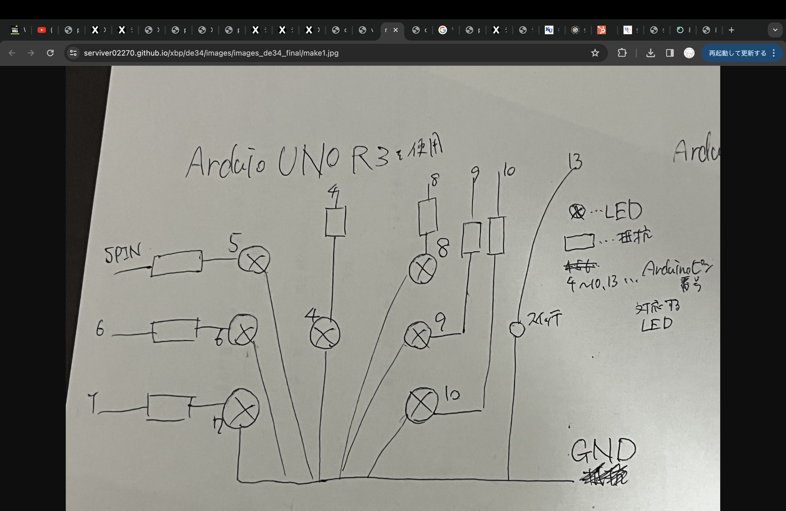

Arduinoのコード
- //当Webサイトに掲載された内容によって生じた損害等の一切の責任を負いません。
- //当webサイトの免責事項に同意いただける場合に限り、プログラムをご利用いただけます。
- #define SW_PIN 13 //スイッチが接続されているピンを定義
- int RAN_NUM = 1; //ランダムな数を格納する変数
- int sw_state = 0; //スイッチの状態を記憶する変数
- void setup() {
-
- //入力ピンに設定
- pinMode( SW_PIN, INPUT_PULLUP );
-
- //出力ピンに設定
- pinMode( 4, OUTPUT );
- pinMode( 5, OUTPUT );
- pinMode( 6, OUTPUT );
- pinMode( 7, OUTPUT );
- pinMode( 8, OUTPUT );
- pinMode( 9, OUTPUT );
- pinMode( 10, OUTPUT );
- }
- void loop() {
- //SWが押されるまでランダムに出目を表示し続ける
- while(sw_state == 0){
- RAN_NUM = random(1,7); //ランダムに1〜6の出目を生成
- ledOff(); //LEDをすべて消灯
- ledOn(RAN_NUM); //出目に応じたLEDを点灯
- //SWが押されたら、状態を移行する（ループを抜ける）
- if(digitalRead(SW_PIN)==LOW){
- sw_state = 1; //状態を移行
- delay(200);
- }
- }
- //SWが押されるまで決まった出目を表示し続ける
- while(sw_state == 1){
- ledOn(RAN_NUM); //出目に応じたLEDを点灯
-
- //SWが押されたら、状態を移行する（ループを抜ける）
- if(digitalRead(SW_PIN)==LOW){
- sw_state = 0; //状態を移行
- delay(200);
- }
- }
- }
- //渡された出目に対応するledをONにする関数
- void ledOn(int led_ran_num){
- switch(led_ran_num){
- case 1:
- digitalWrite( 4, HIGH );
- break;
- case 2:
- digitalWrite( 5, HIGH );
- digitalWrite( 10, HIGH );
- break;
- case 3:
- digitalWrite( 4, HIGH );
- digitalWrite( 5, HIGH );
- digitalWrite( 10, HIGH );
- break;
- case 4:
- digitalWrite( 5, HIGH );
- digitalWrite( 7, HIGH );
- digitalWrite( 8, HIGH );
- digitalWrite( 10, HIGH );
- break;
- case 5:
- digitalWrite( 4, HIGH );
- digitalWrite( 5, HIGH );
- digitalWrite( 7, HIGH );
- digitalWrite( 8, HIGH );
- digitalWrite( 10, HIGH );
- break;
- case 6:
- digitalWrite( 5, HIGH );
- digitalWrite( 6, HIGH );
- digitalWrite( 7, HIGH );
- digitalWrite( 8, HIGH );
- digitalWrite( 9, HIGH );
- digitalWrite( 10, HIGH );
- break;
- }
- delay(10);
- }
- //ledをOFFにする関数
- void ledOff(){
- digitalWrite( 4, LOW );
- digitalWrite( 5, LOW );
- digitalWrite( 6, LOW );
- digitalWrite( 7, LOW );
- digitalWrite( 8, LOW );
- digitalWrite( 9, LOW );
- digitalWrite( 10, LOW );
- }
回路図構成
実物の回路

目押しトレーニング後の理想の動画
デザイン演習34まとめ
・今回も遅れてホームページの更新をすることが多くなってしまった。
・最終課題ではグループの中で決めていたプロダクト作りで息詰まってしまったら心が折れて、別のものに手を出しまってしまいギリギリまで統率が取れていなかった。
そのために少ない時間で発表までたどり着くために、比較的簡単に作れるプロダクトに付加価値を付けるというきょうこに出てしまった。
しかし、基礎を固めることができた点では自分自身の成長につながった。